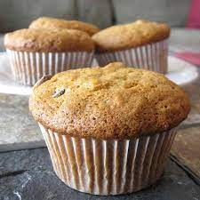

Banana Muffin

Description
Here's a very brief overview of what you can expect when you make homemade banana muffins:
Sift the dry ingredients together in one bowl. Mix the wet ingredients in another bowl.
Fold the dry mixture into the wet mixture.
Spoon the batter into prepared muffin tins. Bake the muffins in the preheated oven.
Ingredients
- Flour
- Leaveners
- Salt
- Sugar
- Egg
- Butter
Steps
- Preheat the oven and place liners in a 12-count muffin tin.
- Cream together butter and sugar then mix in lightly beaten eggs.
- Add mashed bananas and vanilla.
- Whisk together flour, baking soda and salt then mix into batter. Fold in 3/4 cup chocolate chips.
- Scoop batter into lined muffin tin, sprinkle with chocolate chips and bake.